關於劉家莊
歲月慢熬，二十年不變的在地溫暖
歲月慢熬，二十年不變的在地溫暖
隱身於新竹九芎湖的青山綠水間，「劉家莊燜雞」點燃灶火，至今已走過二十多個年頭。我們深信，最好的味道來自對土地的敬意與時間的淬鍊。
因此，我們嚴選在地新鮮食材，依循客家先民的古法燜製手藝，將醇厚的傳統客家風味完美封存。從最初端上桌的那一盤金黃酥脆的燜雞，到無數個家庭在此舉杯歡聚的時刻，我們所傳遞的，早已超越了舌尖上的美味，而是一份猶如回到家鄉般的溫暖悸動。

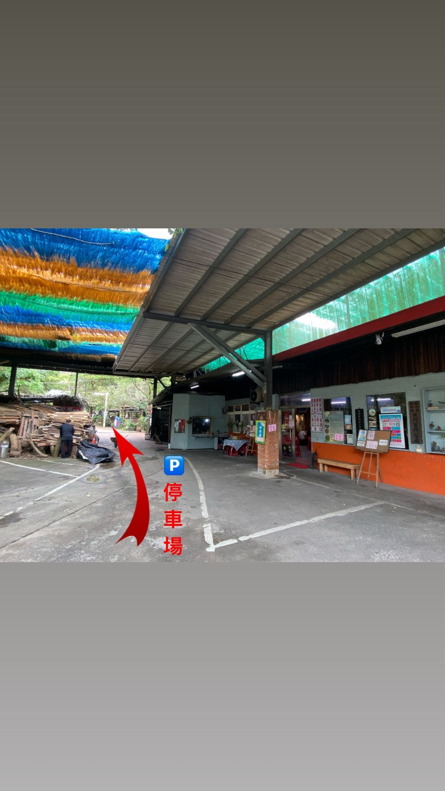
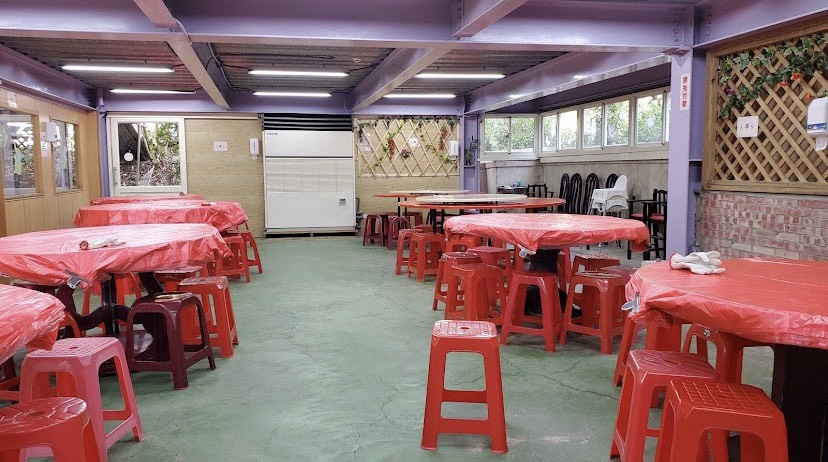
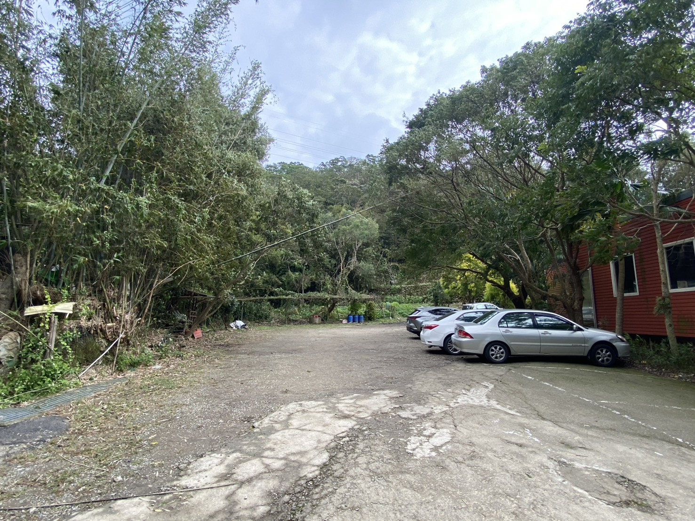
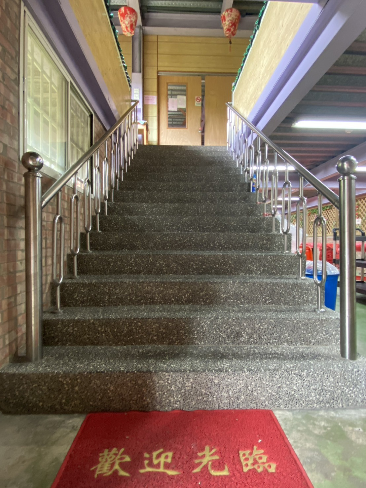
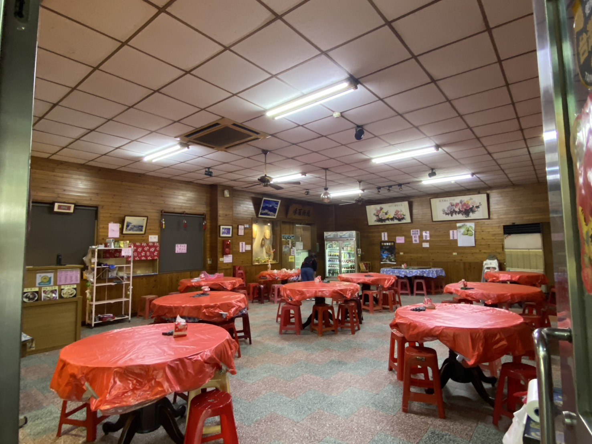
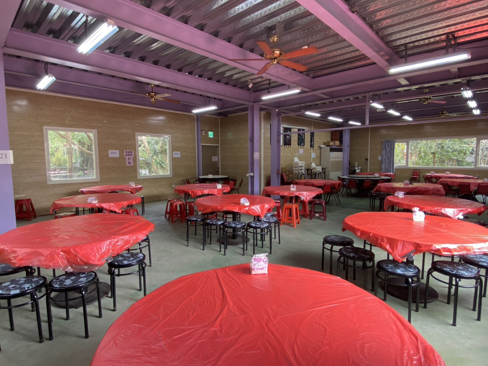
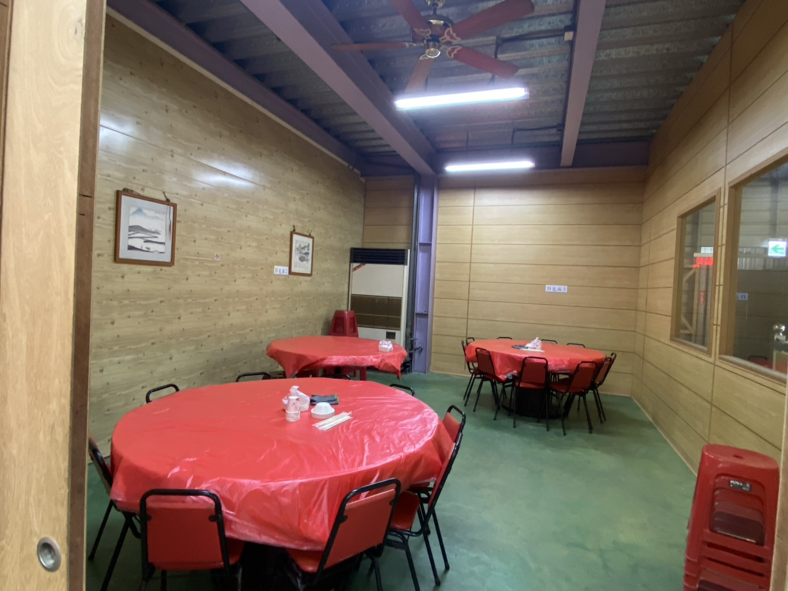
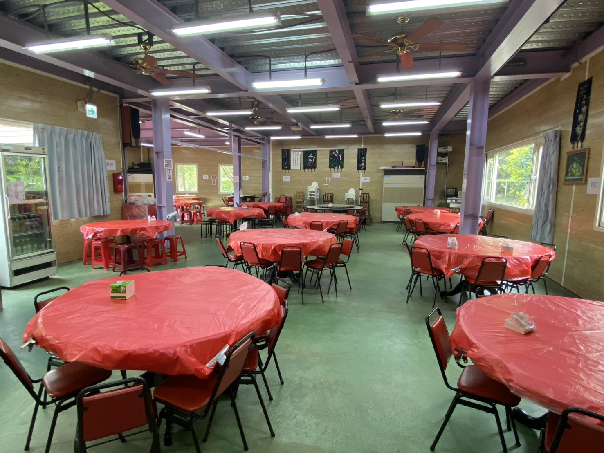
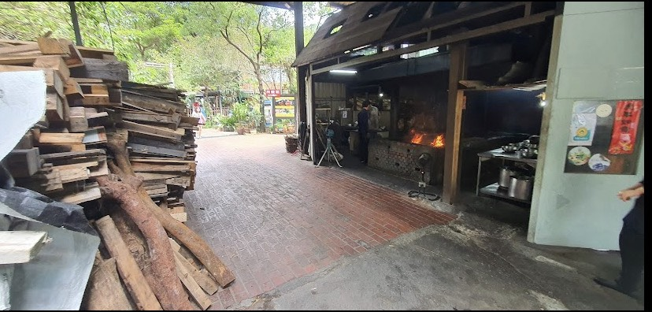
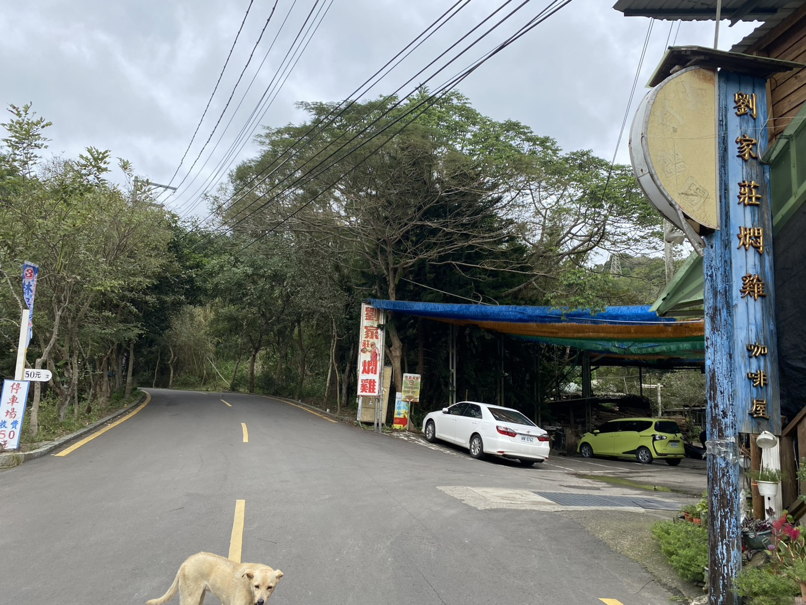
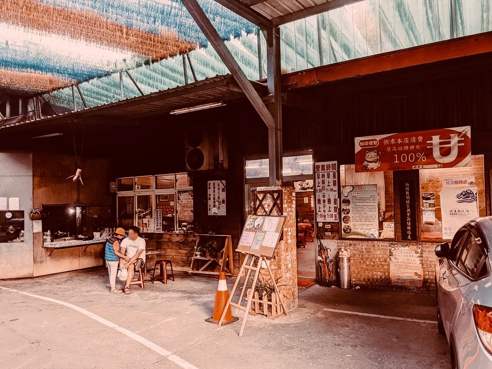


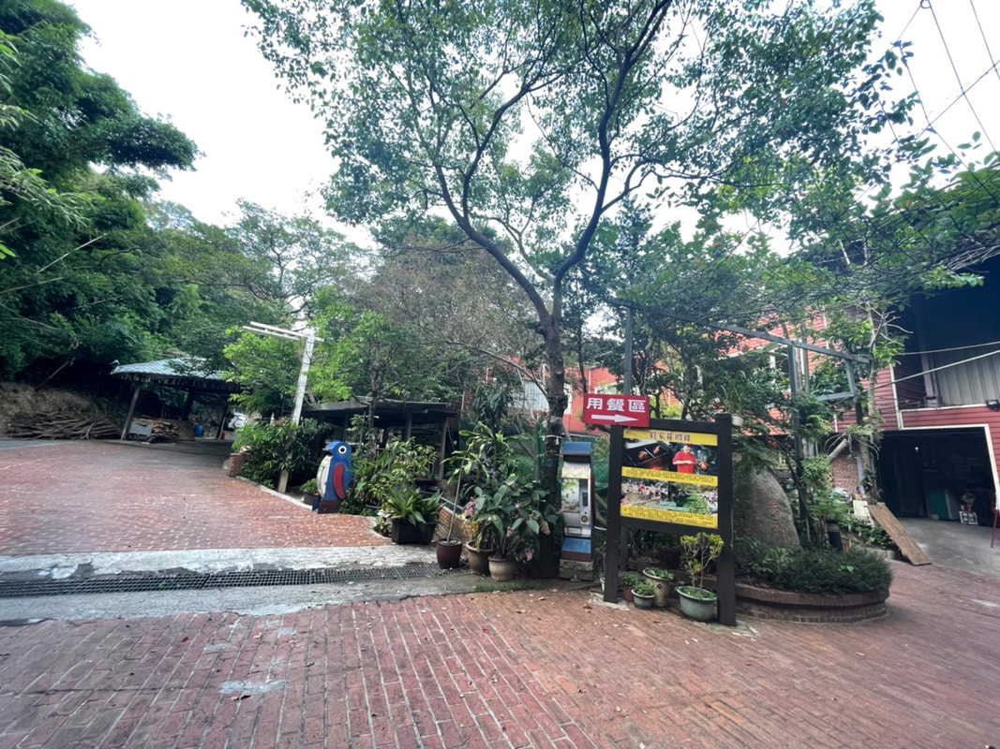
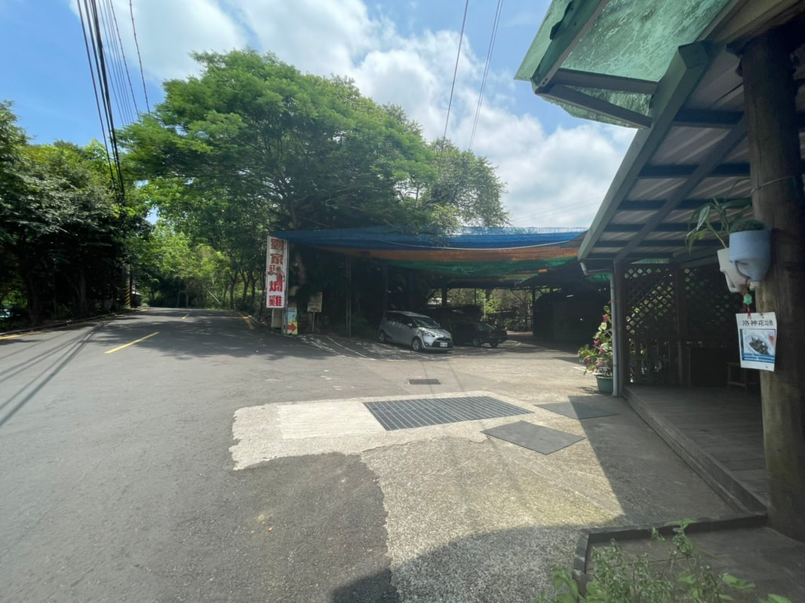